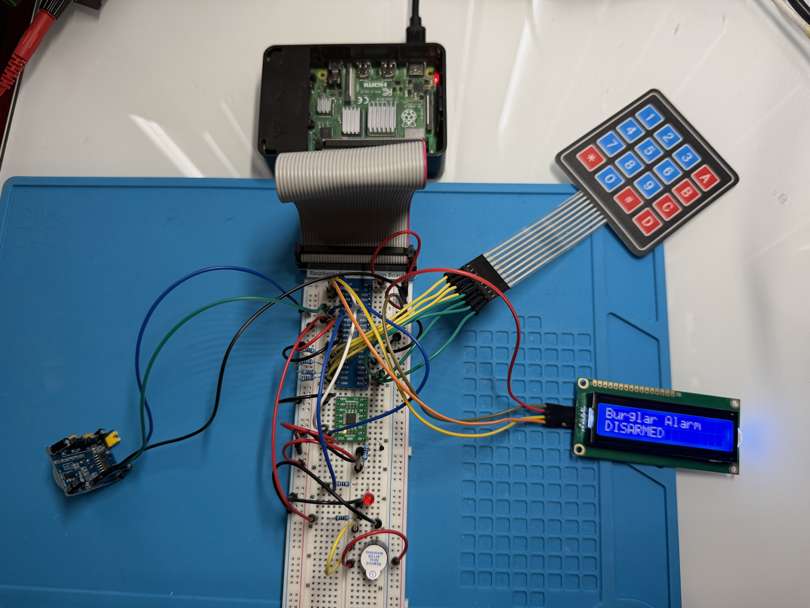

Projects
Embedded Fuel Pump System

Embedded fuel pump simulation system built on Arduino Mega 2560 using finite state machine architecture, interrupt-driven flow sensing, MOSFET-controlled pump operation, and an OLED-based user interface. Features modular embedded drivers, real-time fuel calculation, and fault detection handling.
Raspberry Pi Burglar Alarm System

Embedded burglar alarm system built on a Raspberry Pi 4 using keypad-controlled arming and disarming, PIR motion sensing, ADC-based temperature monitoring, and a 16x2 I²C LCD user interface. Features modular subsystem design, alarm state management, and hardware reliability improvements.
Arduino Traffic Light Controller

Embedded systems project implementing a real-time four-way traffic light controller on Arduino Mega 2560. Uses finite state machine design, non-blocking millis() timing, and asynchronous input handling for pedestrian and emergency override functionality.